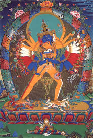

Калачакра в переводе означает «Колесо Времени» в тибетском Буддизме Калачакра это идам или тантрическое божество, которое используют в наиболее сложной системе Калачакре-тантре.
Калачакра-тантра в тибетской традиции считающаяся вершиной учений Ваджраяны.
Основой или замыслом «Калачакры» является доктрина единства бытия, т.е. Калачакра дает возможность понять отождествление макрокосма с микрокосмом, вселенной с человеком. Согласно текстам данной тантры, все внешние явления и процессы взаимосвязаны с телом и психикой человека, в результате, изменяя себя, человек изменяет мир вокруг себя.
Тантра разделена на пять глав. Первая глава посвящена космологии, астрономии, астрологии и теории календаря. Интересно, что данные идеи произвели такое впечатление на тибетцев, что они провели реформу календаря, введя систему шестидесятилетних циклов, которую уже более тысячи лет использовали в Китае. Причиной заимствования китайского календаря послужило то обстоятельство, что календарь «Калачакры» также основывается на шестидесятилетнем цикле, хотя и немного ином, чем цикл китайского календаря. За точку календарного отсчета был взят 1027 год, когда, в соответствии с тибетской традицией, буддийский учитель Атиша принёс текст «Калачакры» из страны Шамбала.
Вторая глава посвящена описанию человеческого организма, третья глава подготовке к медитациям и этапу инициации, четвёртая глава посвящается самим медитативным практикам, а пятая непосредственно состоянию просветления.
Система практик в этой Тантре достаточно сложная, необходимо пройти целый ряд специальных посвящений инициаций. Практика начинается с принятия посвящения в мандалу, изготовленную из цветного порошка или песка (раджомандала). Создание мандалы из цветного песка состоит из следующих стадий: установления ориентации по сторонам света; подготовки квалифицированных художников; приготовления разноцветных порошков; прорисовки структурных линий; окрашивания в соответствующие цвета мандалы; размещения божеств; вхождения в мандалу; устроения сада подношений; ритуала разрушения мандалы.
Манадала Калачакры посвящается миру и физическому балансу как одной личности. Хотя изображение плоское, мандала является трехмерной с пятиэтажным "божественным дворцом", в центре которого божество Калачакра выражает состояние Просветления. Человек, который просто смотрит на мандалу, чувствует умиротворение на различных уровнях. Божества мандалы Калачакры создают благориятную атмосферу и уменьшают напряжение и насилие в мире. Это путь засевания семени, который имеет кармический эффект.
Считается что Калачакра была принесена в Индию Килу и Калачакрападой, её продолжали изучать и практиковать в Индии, и со временем она попала в Тибет.